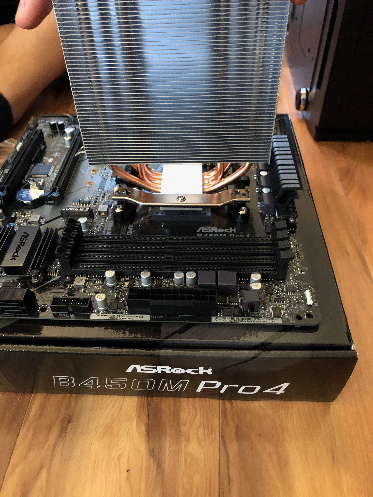
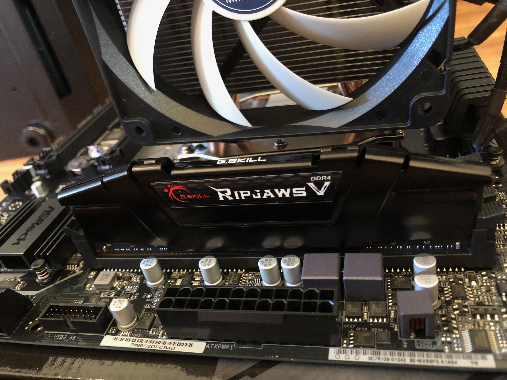
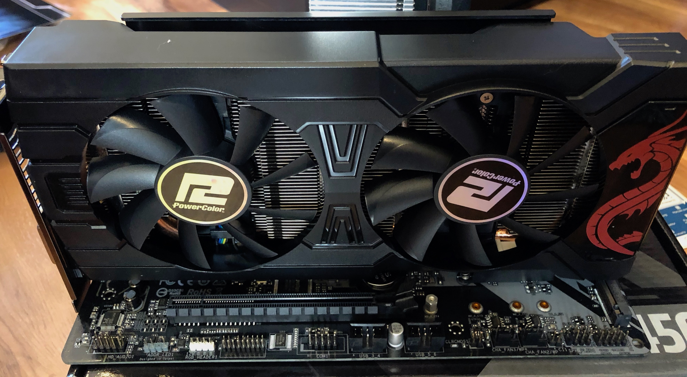
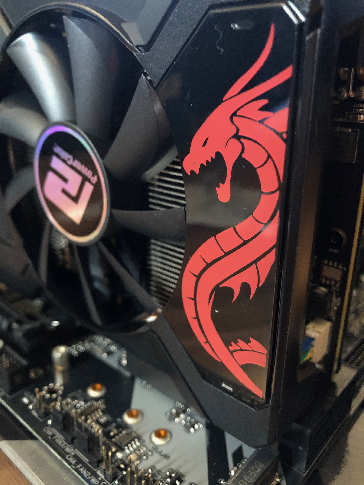
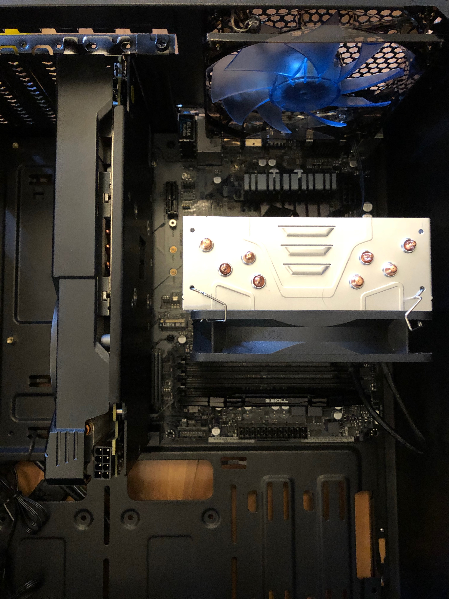
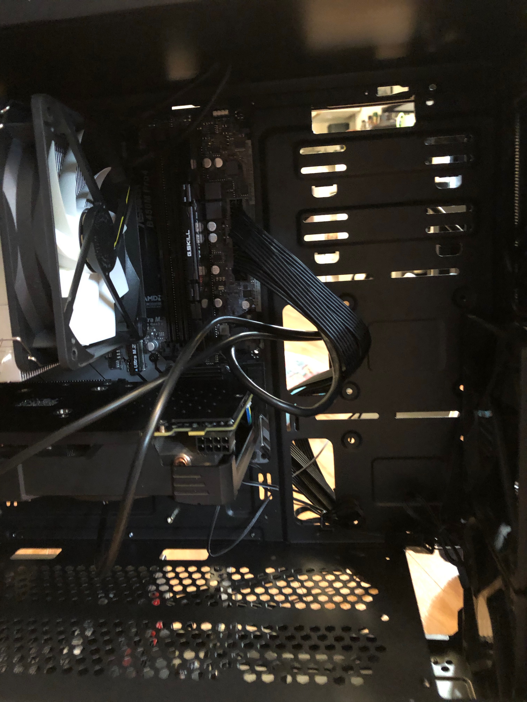

Learning computer hardware basics
Putting a computer together
This blog post shows a simple, laments explanation of basic computer hardware components and how they are assembled to form a desktop computer.
Computer Parts
The purpose of this "tutorial" is to explain the process of the building/putting together computer parts as experienced by me, a complete and utter newb at computer hardware.
Step 1: The Tower
So the first thing we did was unpack the box, case, or tower (however you want to refer to it, the thingy that houses all the other parts)
This case has a removable side, so we unscrewed it and set aside for later.
Step 2: Motherboard and CPU
The Motherboard is one of the most intriguing and curious bits of the whole setup, and requires gentle handling.
The main part we had to attach was the CPU. The CPU or Central Processing Unit/ Contract Postal Unit (a.k.a. the Processor) is a tiny little part that packs a punch. When handling it, you aren't supposed to touch the front or back surfaces, which leaves its' tiny sides.
The motherboard has a special place for the CPU and it even has its own lever for securing it. So with the little lever raised we carefully aligned the CPU in its place and lowered the lever. Then we moved on to the CPU's fan, we applied a small blob of thermal paste onto the surface of the CPU. Thermal paste aids the CPU and motherboard by allowing for better heat conduction. So with the paste in place, we aligned the fan with the CPU itself and screwed the fan into the motherbaord. The pressure from the screws forces the blob of thermal paste to spread evening across the surface of the CPU.
From here, we plugged the fan into the motherboard and clamped on the fan's case.
Step 3: RAM and Video Card
RAM or Random-access Memory is a type of memory storage for the CPU, it is used in the short-term memory processes, things that need to be quickly accessible but not necessarily stored permanently to the computer. Attaching the RAM to the computer was one of the easier steps in the whole process. The motherboard has several slots for the RAM. We gently slid the RAM into one of the slots until it clicks and is secured into place.
The Video card is what helps the computer understand and generate images for display. The Video card has an almost identical installation process as the RAM, it is simply slid into the PCI slot until it clicks into place (PCI stands for Peripheral Component Interconnect, which is a fancy was of saying that it is a slot for connecting internal components to the motherboard).
  Step 4: Into the tower
Now that these main components are attached to the motherboard, we gently placed it into the tower. The key here is to make sure all the ports on the front face of the motherboard are properly aligned with the slots of the tower. Once aligned properly, it was time to secure the motherboard into place with screws. After the motherboard was secured, we also attached the clip that holds the video card safely within the tower as well.
Step 5: Power Supply
Small and simple step, but crucial! The power supply is.. wait for it.. The supply of power for the computer! Shocking I know. But in all seriousness, the power supply's function is to convert the electrical current (gathered by the outlet the computer is plugged into), into the correct voltage, current, and frequencies to safely and correctly run the computer. The power supply fits nicely into a slot in the tower and is connection by plug into the motherboard.
Step 6: Cords, cords, cords.
The last few chapters of this book mainly deal with cords. Now that we had successfully placed the marjority of the components into the computer tower, they all needed to be able to communicate with each other.
The first set of cords, were the cords that connected the tower itself to their counter ports on the motherboard. These were the USB and Audio ports.
Next, we again turned to the power supply. The video card needs extra power so it got directly hooked into the power supply. Same goes for any additional hard drives and extra fans. At this point we hadn't installed the hard drive, but we still connected the cords so they would be ready for us when we got there.
Step 7: Drives
The hard drive in a computer is the component that handles permanent and long term memory storage. The hard drive has its own slot within the computer tower. After sliding it into place it gets plugged into the power supply.
The SSD drive also has its own cavity within the computer tower. SSD or Solid State Drives, are a fast, high performing storage drive. The drive gets placed and plugged into the motherboard and power supply just like the hard drive.

Step 8: Enclose Tower
Now that all the major working parts of the computer are secured within the tower and plugged its time for a test drive. First we replaced the tower's side, then plugged it into an outlet and BOOM! Computer time!